DjangoCon US 2026 Recap¶
Table of Contents¶
-
Keynote: Boldly Go, Building Worlds: Is there Room for me on the Bridge?
Pragmatic AI: How to gain trust with user-centered AI adoption
Search-as-you-type for 54 Million Names: PostgreSQL + Django for Fuzzy Name Matching at Scale
Using Django to deliver public transit benefits securely and privately
Disclaimer: the content of this post is a reflection of my career journey and not specific to my work at JPMorganChase.
Intro¶
DjangoCon US 2026 took place in Chicago, Illinois from August 24-28. I attended online.
This year, I paid more attention to the lightning talks (I usually take an early lunch) and also included in my recap some of the rich info discussed during the Q&A after talks.
These notes are specific to my interests and leave out info that might be of interest to you. I highly recommend watching the talks yourself when they are posted on YouTube!
My favorite conference cross-pollination:
Contributing to Django ecosystem deep dives: Sarah Boyce, Sarah Abderemane, Paolo Melchiorre, references to Paolo’s work by Elizabeth Christensen, Andrew Selzer, Francisco’s Day 2 Lightning Talk
Release notes deep dives by Karen Tracey and Eduardo Felipe Castegnaro from different angles, with both recommending Miscellaneous section!
Bartek Pawlik’s moving Django Photos Lightning Talk
Monday¶
Orientation¶
by Kojo Idrissa
Set your priorities. Why are YOU here? Direct your time and energy properly.
Monday Opening Remarks¶
by Keanya Phelps
“This community is extremely giving and considerate, respectful. I used to say ‘they’ as far as Django and DjangoCon, but now I say ‘we.’”
DjangoCon US 2027 will take place in Riverside, California from September 13-17.
Keynote: Boldly Go, Building Worlds: Is there Room for me on the Bridge?¶
by Dawn Wages
Dawn is calling all of us to dream with her.
“You all, the Django Community, saw me from a nervous and quiet and unsure person hiding in the back of a conference room to raising my hand and even calling myself a leader.”
Dawn spent a long time not being scared.
I appreciate that Dawn revealed the influences that instilled within her grit, tenacity, and a love for technology, heavily influenced by her parents:
An HBO series called Happily Ever After and Twilight Zone (also one of my favorites)
Watching Star Trek Next Generation with her father
Her parents teaching her about the first Black woman astronaut and taking her to space museums
Her mom keeping copies of Ebony Magazine with beautiful Black women on the covers, creating the voice she would hear about Black women in the future (“she intentionally wrote the script”)
Her dad dancing with Funkadelic and Stevie Wonder
Afrofuturism: “There are Black people in the future- an interdisciplinary vision intersecting with imagination, technology, Black culture, liberation and mysticism” (inspired by Ytasha L. Womack’s Afrofuturism: The World of Black Sci-Fi and Fantasy Culture)
For those who have not seen themselves in the future through science fiction and speculative fiction, it is necessary to say and visualize that there are Black people in the future.
Dawn and some friends created An Anti-Racist Ethical Source License for Open Source Projects. She would love to make new iterations.
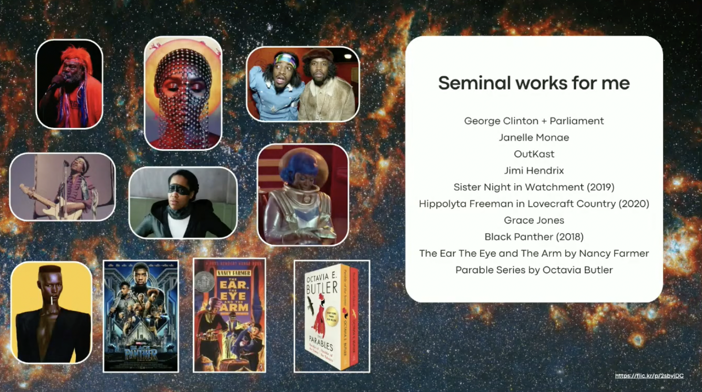
Seminal works for DawnStar Trek pushed boundaries.
Afrofuturism “provides a lens on how I’ve learned to dream.”
How to be a builder:
Do the work in public
Make room for people who don’t have a seat at the table
Stay accountable to your crew
Lessons Learned:
Dawn was always who she needed to be and did not need to change to be worthy of any opportunity she reached for
She stays ready so she doesn’t have to get ready when opportunity knocks (example: filling in as last minute speaker at important conference)
Sometimes opportunity knocked, and she wasn’t ready, but she tried her best anyway
You also don’t have to “build the world.” (Dawn contends with strong Black woman trope)
“You are allowed to be exhausted without giving up. Sometimes surviving is progress.”
She is always asking for more. Don’t ask, am I good enough? For a Black woman this creates difficult, high friction conversations, direct feedback frequently. It’s exhausting. It’s easier to have a conversation when you are not on your back foot.
Rejection is the risk of authenticity.
“Being the first or only is lonely.” But, Dawn would take being “rounded, complex, unique, strong over easy access any day,” because it’s made her who she is today.
Your experience matters. You belong here. Is there room for me? Yes, Dawn is making room.
Thank you for being vulnerable, Dawn.
Good Conduct: How Django Modernized Its Code of Conduct¶
by Dan Ryan
A long-time Django user, Dan volunteered to serve on the Code of Conduct Committee. He eventually became the chair and helped to modernize the Code of Conduct.
“This was my first contribution to Django. Code isn’t the only way in.”
Why now? “We kept running into issues where people were being jerks. And there was no language that said, ‘you can’t be a jerk.’”
Contributor Convenant, adopted by over 100 organizations, including some of the biggest players, has lineage back to the original Django Code of Conduct, which borrowed from the PyCon 2013 Code of Conduct and Ada Initiative.
Pipeline: Ada Initiative -> PyCon 2013 -> Original Django Code of Conduct -> Contributor Covenant 3 -> PSF, OpenJS, Mozilla, Microsoft
This talk was about the people management side. Dan published a blog post about the technical side: The Block and Tackle of Django’s Code of Conduct Working Group.
AI-generated content: “Own your contributions, review them before you post, apply your own expertise- misuse of AI-generated content is a Code of Conduct violation.”
Issues brought up during Q&A:
The possibility of a significant amount of Django code being written by AI and its ownership then being in question is a real concern.
The CoC Working Group spent the most time on the weapons policy. They didn’t want to be US-centric. They gave guidance to events. Events implement their own policy.
“Assume good intent” is a weaponed phrase. You should not assume any intent. Look at impact.
References:
Pragmatic AI: How to gain trust with user-centered AI adoption¶
by Meagan Voss
Wagtail serves a lot of people beyond Torchbox and its clients.
A small team with a healthy skepticism of AI hype, the Wagtail team has adopted a balanced AI policy that respects users’ autonomy and choice. Wagtail users are responding through PyPI downloads and shoutouts.
Wagtail’s AI Guiding Principles:
No AI dependency in Wagtail core (not forcing AI on anyone)
Responsible approach to AI (example: model with lower environmental impact)
Model and provider agnostic (not picking a horse in this race)
Only the right AI (want evidence of benefit)
Human in the loop (human is in control)
Multiple vendor options
User decides how much AI to use and where
User control over prompts and tokens
Focus on common, repeatable tasks in content publishing
Other steps for Wagtail and AI: product strategy:
Next major release includes a fully supported write API
Continue their sustainability and quality research
Pursue agent-ready publishing
Create agent skills to improve DX experience
Issues brought up during Q&A:
What was involved in making docs easier for AI to read? Made sure content was in Markdown and added copy options on user guide
Wagtail has added a write API and Thibaud is experimenting with a docs builder. Despite the beauty of Wagtail, CMSes are going to become “clearinghouses and sources of truth” for AI. Wagtail is laying the foundation for whatever direction things go.
References:
Open weight models are catching up, Epoch Capabilities Index
Wagtail Documentation (for developers)
Wagtail User Guide (for regular users/editors)
See the talk slides for many more references
Monday Lightning Talks¶
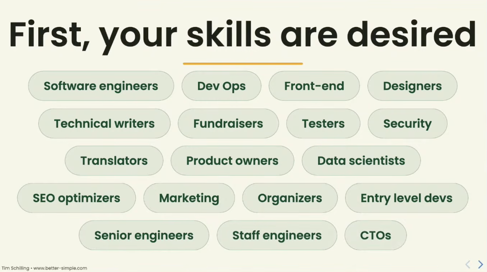
Tim Schilling: I want to convince you to contribute to DjangoSome topics of interest to me:
Marc Gibbons: django-absurd based on django-absurd
Jim Anderson: normalize talking about imposter syndrome
Jon Gould: Tech Hiring Has a Fraud Problem
Eric Holscher: 16 years ago, Read the Docs was created in the same basement as Django in Lawrence, Kansas. Ethical ads made Read the Docs sustainable. The DSF is at similar inflection point of hiring an executive director and working toward sustainability.
Jeanette O’Brien: From Figma to Django. “Premature structure is its own trap- just like no structure at all.”
Eric Sherman: Chicago reversed the flow of the Chicago River and raised the city 14 feet in the air, Raising of Chicago Wikipedia article
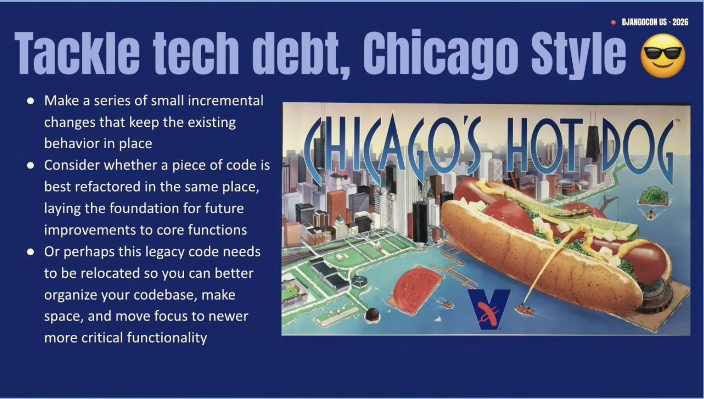
Eric Sherman: Tackle tech debt, Chicago-styleSearch-as-you-type for 54 Million Names: PostgreSQL + Django for Fuzzy Name Matching at Scale¶
References:
Using Django to deliver public transit benefits securely and privately¶
Tuesday¶
Tuesday Opening Remarks¶
by Peter Grandstaff
Organizing DjangoCon US is a huge endeavor. “Getting involved in organizing and running this conference has been a hugely enriching factor in my life. My life is so much bigger and better, because of the work I’ve done here.” If you want to get involved, talk to an organizer, talk to Peter. Get in touch.
DjangoCon US 2027 ticket prices are the lowest they will be at extra early bird.
“Hey, we don’t do that here.”
Get the word out about the conference. We want everyone who would want to be at DjangoCon US to know about it.
Keynote: Emails from my Grandad¶
by Sarah Boyce
Sarah’s talk is through a lens of contributing to open source projects.
Why we do code review?
Make sure the code works
Make sure the code fits the project itself (conforms to coding style, etc.)
Knowledge-exchange is distributed to contributors and wider community and maintainable (fix issues, extend without asking original author)
Psychological triggers from Thanks for the Feedback: The Science and Art of Receiving Feedback Well:
Truth: you believe the feedback is wrong (be open, curious: others might come to same conclusion, it’s worth engaging, honest mistake?)
Relationship: affected by who is giving review (a person you don’t like, a person you don’t know, an intimidating person, etc.)
Identity: the feedback feels bigger than what it actually is (rather than see it as one small piece of work among all of your work, you begin to have self-doubt as if it reflects heavily upon who you are as a developer)
Advice:
Mergers also make mistakes. You should feel confident and capable of questioning their feedback, just like anyone else.
Growth mindset
This is just the first draft, don’t worry too much about mistakes. Respond, fix problems, engage. The end result is what matters.
Hidden agenda: get more reviews for Django PRs. PRs in the Django review queue sometimes take months to get reviewed. This is becoming worse due to the rise of AI.
What’s worse than receiving a review is receiving no review at all. A review is someone investing in your work. Human attention is a limited commodity. Sarah believes most people would prefer to receive a clumsy, imperfect review over no review at all. The collaboration is the joy.
Django needs you to do code review.
Issues brought up during Q&A:
PR authors tend to get more attention than reviewers (co-author is an idea, but messy)
It took Paolo months to have the courage to open a PR. Language was a barrier. Sarah believes pair programming can help.
In-person sprints are good place for pairing. Django on the Med shout-out.
Due to the release timeline, be strategic about when you ask for help, to get features included
How to avoid triggering PR author: be polite, be empathetic, clear is still kind
You can tell when a person is upset and handle it
Batteries vs. Speed: The Django/FastAPI Debate¶
by Calvin Hendryx-Parker and Frank Wiles
No wrong answers. Tradeoffs.
Django + Django Ninja versus Fast API
The Testing Pyramid in Practice for Django¶
by Monica Oyugi
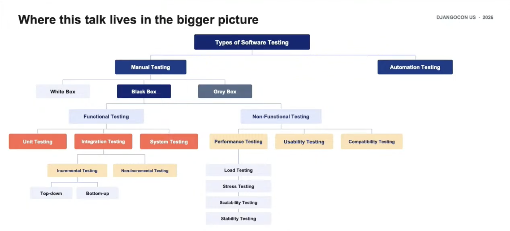
Tuesday Lightning Talks¶
50 shades of green - One contribution to the Django world¶
by Sarah Abderemane
What’s New in Postgres 18 & 19¶
by Elizabeth Christensen
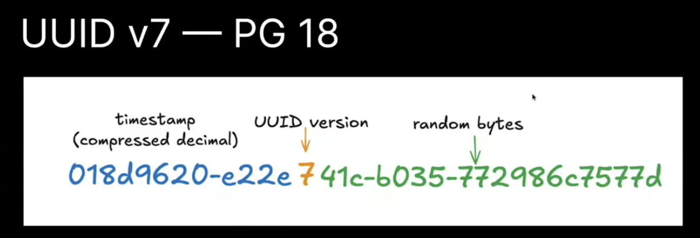
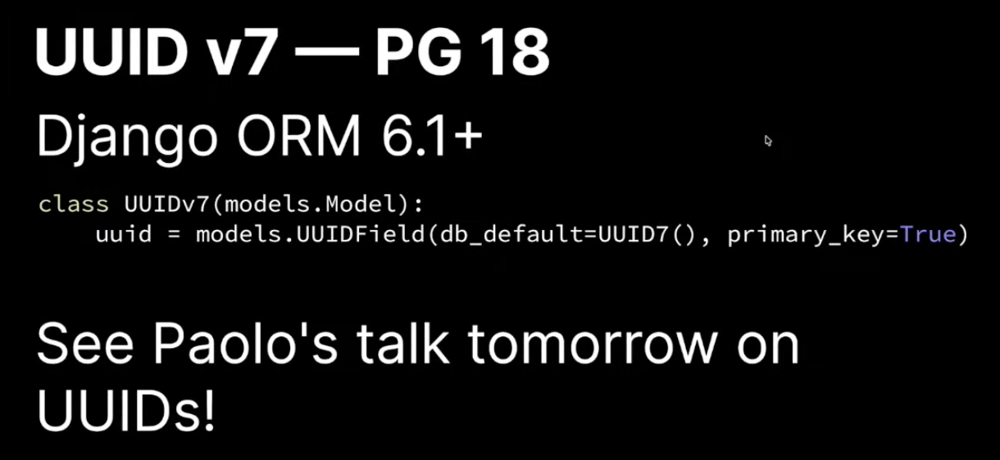
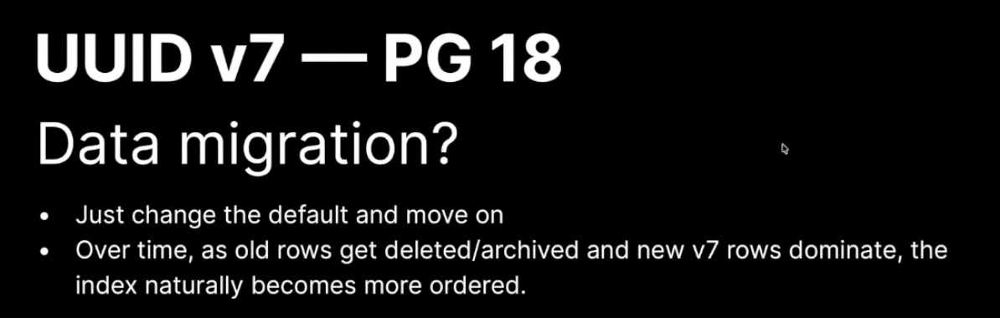
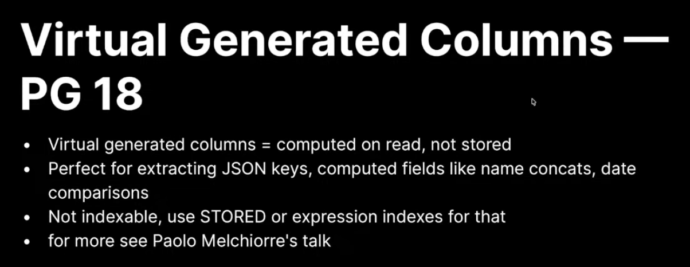
Paolo’s contributions to the Django ORM have inspired me to go further in understanding how potential new features are identified, tested, and added to Django.
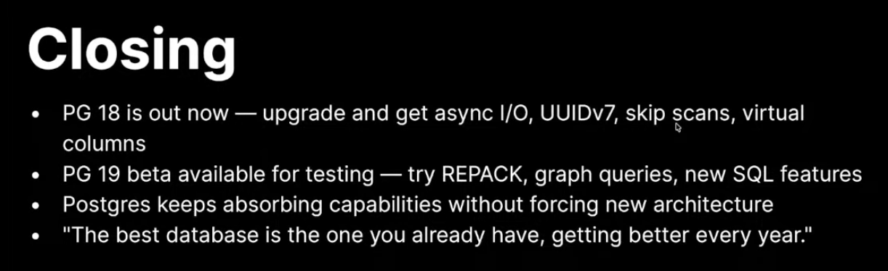
References
Keeping Pace with Django: Evolving Through 15 years of Updates¶
by Eduardo Felipe Castegnaro
Eduardo has been working on the Onsign CMS codebase for the past 15 years. He has lived through 21 Django versions- Django 1.3- 5.2.
Onsign’s use case requires some advanced SQL. The Recursive Common Table Expressions they use do not map cleanly to the Django ORM, resulting in use of Queryset.raw(), Queryset.extra(), and cursor.execute() that puts the Onsign Team among the 1% of Django users who require extensive raw queries in their database outside of the scope of regular users. A nine-year-old ticket exists to add Recursive Common Table Expressions support to Django.
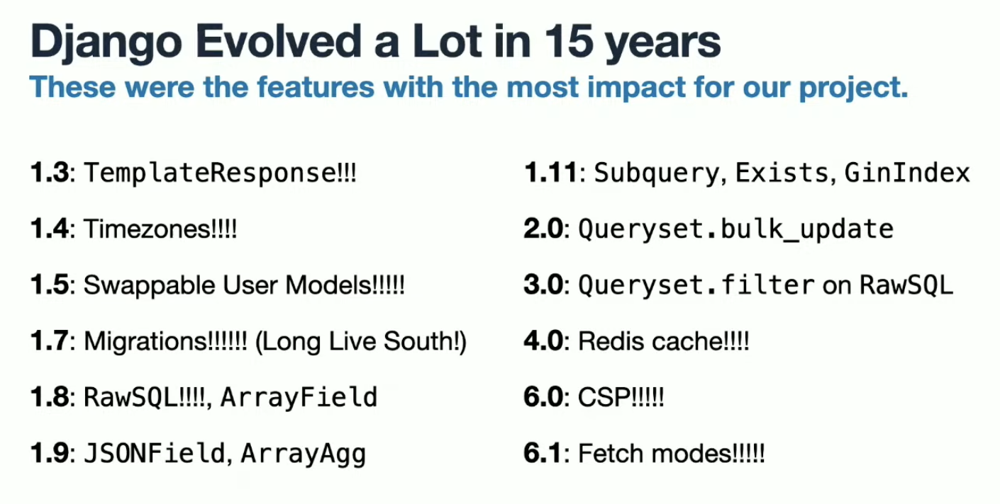
“If the framework keeps improving nonstop, you get to reap the rewards!”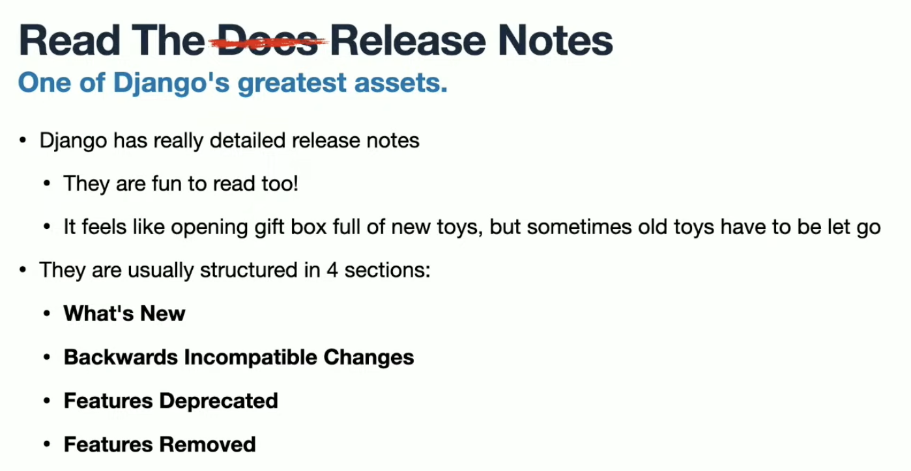
Eduardo doesn’t know if he is weird, but he thinks the release notes are fun to read, and he sometimes comes across little jokes.How to read the Django release notes
What’s new (a.k.a. New toys). When you get new toys, you also have to let go of some old ones.
Backwards incompatible changes: these changes will currently break production. You will need to make updates and plan to minimize downtime.
Features deprecated: changes to Django’s API will break production eventually. You will have to update your code to avoid. See Django’s Deprecation Policy.
Features removed: after the deprecation timeframe is over, you will not get a warning. The code will just break.
Miscellaneous: his favorite section, because there is so much good stuff in there
Deprecation timeframe
If LTS, you have a lot of time. If minor version, less time.
With the new release cycle, you will potentially have four years of deprecated feature before it’s removed
Examples of changes
What’s new example: in Django 1.7, replacing a custom solution for logging a user out of all sessions in the event of a password reset with a built-in solution
Backwards incompatible changes example: live-migrating from Postgres 9.5 to 17 (Onsign Team does not want to be a burden to Django Community to support old versions)
Feature deprecated example: in Django 3.1, changing django.conf.urls.url() to django.urls.re_path()
The one time in fifteen years that a point release “did them dirty”: in Django 3.1.1, QuerySet.order_by() fix was an obscure reference, but broke prod
Onsign Team has discussions with the Django Community in the tracker or mailing list. Django has to look out for everyone. A decision that is right for Django might not be right for Onsign Team. They have seven different monkey patches on top of Django. If it breaks, it’s on the them to fix.
Wednesday¶
Wednesday Opening Remarks¶
by Drew Winstel
Inspired by Django Under the Hood, Day 3 is deep-dive day.
If you want to help organize DjangoCon US next year, email hello@djangocon.us. DjangoCon US has a lot of jobs. Let them what you are interested in.
Keynote: Django 6: The Most Exciting Release Ever¶
by Karen Tracey
Django has been around for 21 years of releases. Nearly 20 years ago, Karen started using Django for a hobby project, before Django 1.0 release. She had some issues and almost immediately created a report and was invited to create a patch. She started to help develop Django and became a Django Core Developer.
Although Karen highlights four big things, there are “little gems throughout the release notes.” Read the full notes, including Miscellaneous (this is the second reference of the conference to the importance of this section). There might be functionality that would appeal to your project or address a pain point.
These are in the order of Karen’s increasing level of excitement.
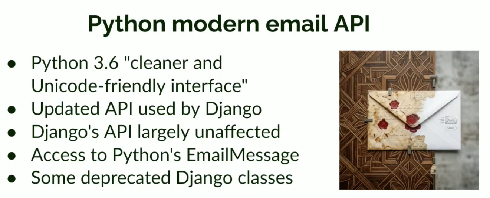
Karen feels that this feature reflects Django’s health, because it indicates that Django is picking up Python’s new features.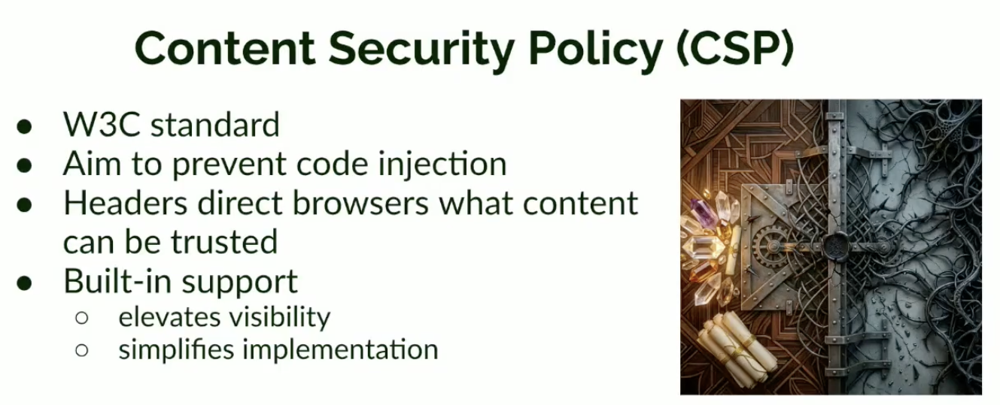
Karen thinks it’s “excellent that Django has incorporated [CSP] into the base,” because it makes it visible to Django developers that they need to decide and implement a CSP.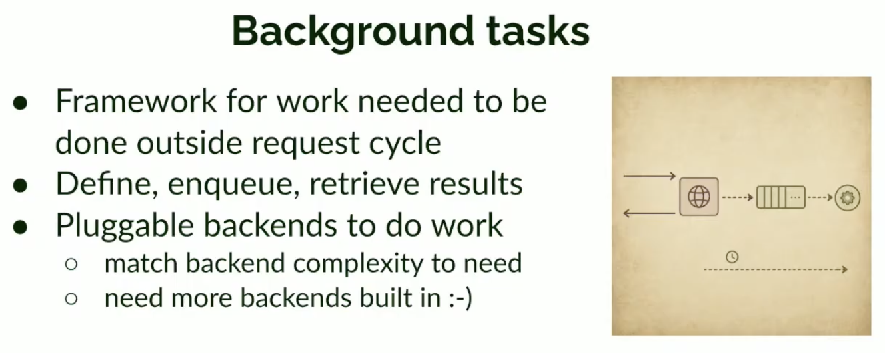
Karen points out that Celery is often more complexity than is necessary. She’s happy that standardization for enqueuing and execution is happening. She would like to see at least one production-ready backend be included in Django 4.0.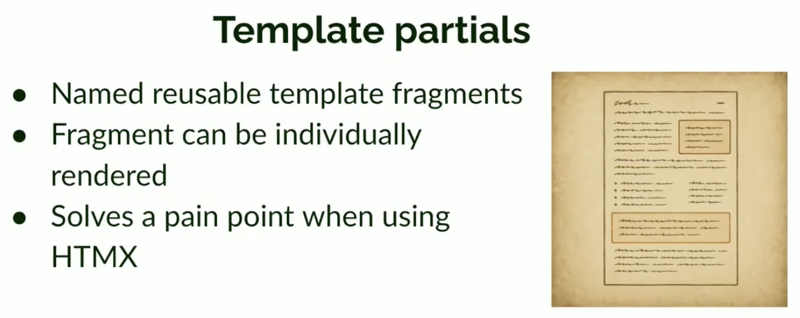
Template partials is the feature Karen is most excited about.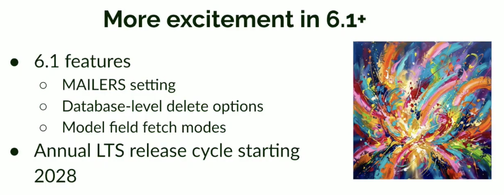
Django has a new features repo for proposing new features
Wednesday Lightning Talks¶
Modern Django Deployments in 2026¶
by Will Vincent
“90% of Django deployments are the same.” Will wants to prove that using his mental model. He did not talk about tooling. He wanted to talk about the things that don’t change.
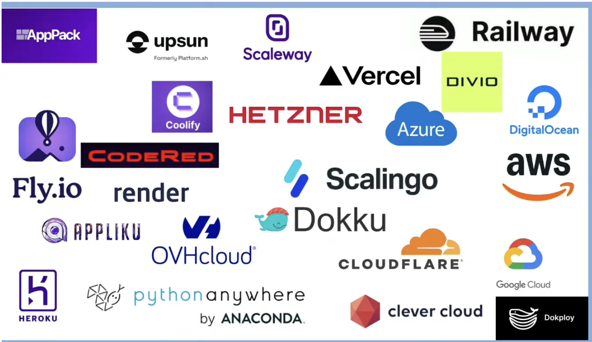
Shortlist of providers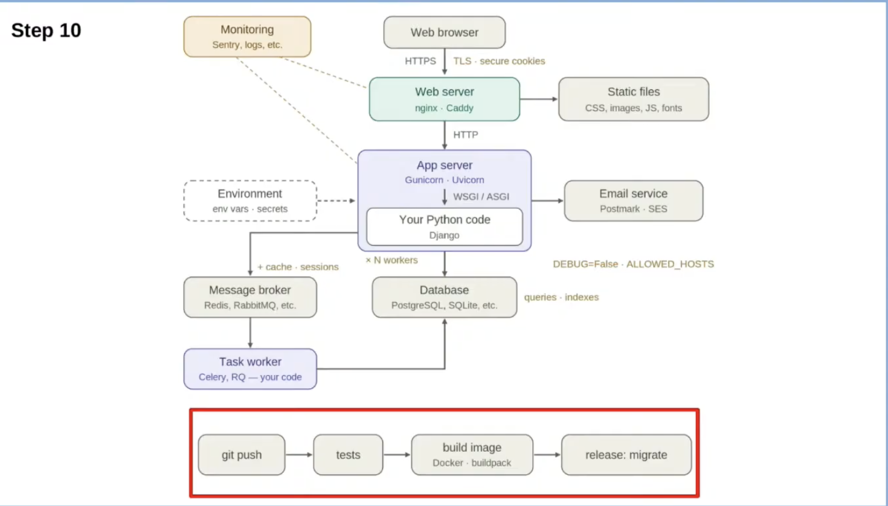
Deployment architectureNotes
Now we have WSGI/ASGI (based on Django Channels)
Django supports five databases out of the box: Postgres, SQLite, MySQL, Oracle DB, MongoDB
psycopg driver is needed for Postgres
Tools: Docker, White Noise, Nginx, CDN, Redis, RabbitMQ, Celery, RQ
collect static command, media is uploaded by users, so can’t trust it. Have to put it somewhere else.
auth: how to do password reset, email, passkey, sms (“a mistake here in production will get you in the news in a way you don’t want to be”)
In prod, with public internet, everything is a threat
https is not enough, because it does not protect session cookies
Once a page is loaded we cannot trust it to not run someone’s script. CSP middleware addresses this.
TLS, secure cookies, debug setting, allowed hosts
Hardening doesn’t make anything faster
Background workers (in prod milliseconds matter), message brokers, tasks
Performance: caching (“two copies of truth, and we have to know when to throw away the stale one”), n workers, indices, model fetch modes
When people say Django is slow (sometimes Fast API is faster), it’s not Django/Python. It’s the database
Resist the urge to prematurely optimize (wait for real traffic to determine which pages are slow, don’t sprinkle indices like candy ahead of time)
Locally, you will get an error message. In prod, use monitoring, Sentry, logs.
Issues brought up during Q&A:
Will would love to see some “magic” added such as a flag or other mechanism to “flip a switch” to go from local mode to prod mode to deploy to a platform as a service or app pack. A lightweight way to deploy could help newcomers and those “afraid of Django.”
Will is considering open sourcing his own deployment checklist (yes, please). Django also has a deployment checklist. Will suggests to start by running the Django management command ‘manage.py deploy –check’ to assess your deployment readiness. Will suggested also to ask AI for a deployment checklist.
When is Django Cloud deploy as a service coming out? (for context, Fast API has Fast API Cloud).
Will does not use AI for deployment, but he has heard people say they are doing infra, terraform, kubernetes, etc. and it works well. It is really saving time and doing it well?
Remember when:
cgi and mod_python
Multiple settings.py files
Jacob Kaplan-Moss talk “Assets in Django Without Losing Your Hair”
The Django UUID Story¶
by Paolo Melchiorre
Snippets¶
by various
Closing Remarks¶
by Keanya Phelps
Keanya, thank you for chairing two unforgettable conferences!